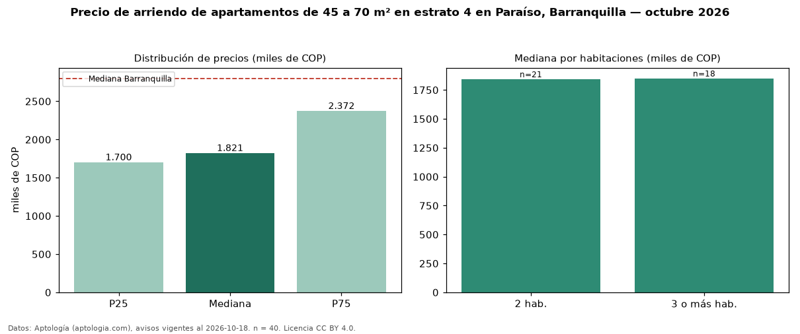

Precio de arriendo de apartamentos de 45 a 70 m² en estrato 4 en Paraíso, Barranquilla — octubre 2026
En Paraíso, Barranquilla, la mediana de canon mensual de apartamentos de 45 a 70 m² en estrato 4 es COP 1,82 millones, según 40 avisos vigentes. Eso es 14 % menos que la mediana de los apartamentos en estrato 4 en arriendo de Paraíso (COP 2,12 millones, n = 72); este segmento reúne el 56 % de esos avisos. Por metro cuadrado, la mediana es COP 34.773/m² al mes (n = 40), 10 % por encima de los apartamentos en estrato 4 en arriendo de Paraíso (COP 31.667/m²). El área mediana anunciada es 56 m². El segmento con más oferta es el de 2 habitaciones (21 avisos, mediana COP 1,84 millones); pasar de 2 habitaciones a 3 o más habitaciones cambia la mediana +0 %. La administración mediana declarada es COP 257.100 al mes (n = 19), aparte del canon. La mediana de todos los apartamentos en arriendo de Barranquilla es COP 2,80 millones (−35 % de diferencia). La mitad central de los avisos va de COP 1,70 millones a COP 2,37 millones (razón 1,4), una dispersión baja. Datos: Aptología (aptologia.com), CC BY 4.0 — https://www.aptologia.com/arriendo/barranquilla/paraiso. Archivos: PDF, CSV con las cifras y gráfica PNG.

| Avisos únicos | 40 |
|---|---|
| Percentil 25 | COP 1.700.000 |
| Mediana | COP 1.821.450 |
| Percentil 75 | COP 2.371.500 |
| Mediana por m² | COP 34.772 |
Fuente: avisos vigentes de portales inmobiliarios recopilados por Aptología, deduplicados (mínimo 30 avisos únicos por celda). Precios pedidos, no cerrados. Fecha: 2026-10-18.